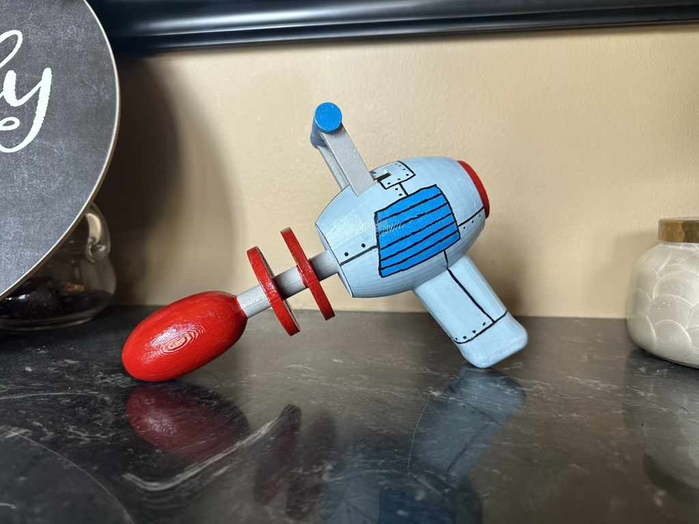
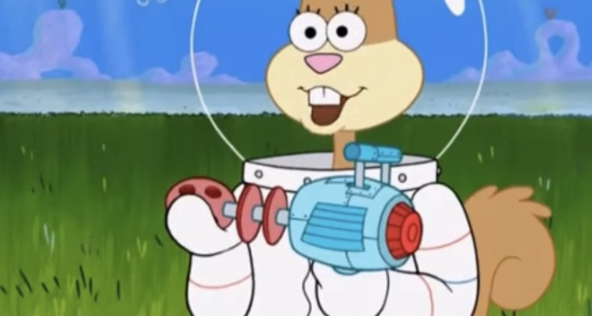
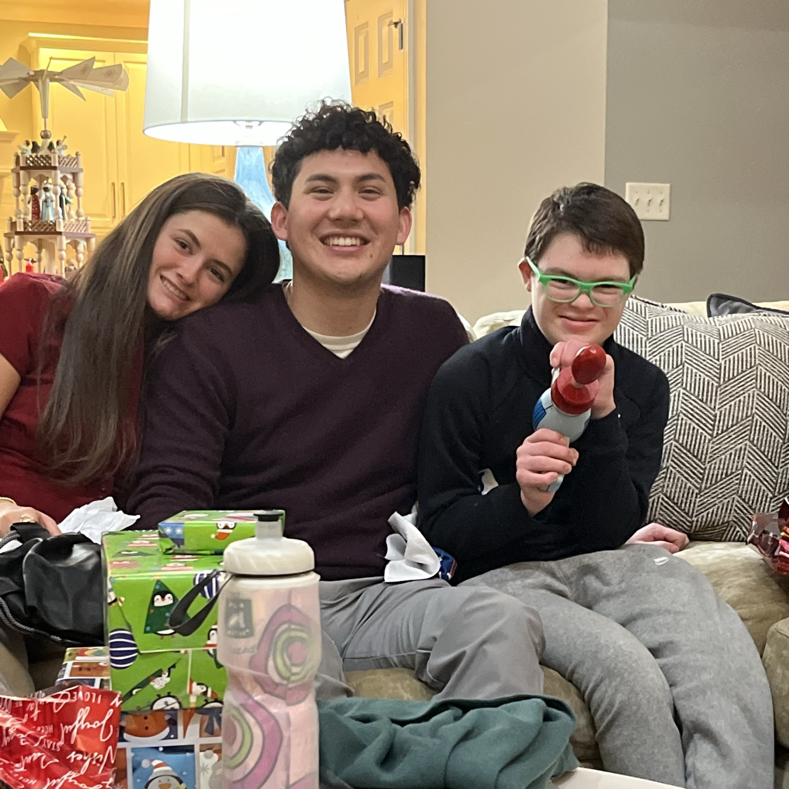

Aiden loves SpongeBob SquarePants and the episode featuring the Rubble Reversin’ Ray, so I set out to make him a one-of-a-kind Christmas gift. Working from only a few still images from the show, I custom designed the prop, 3D printed it, and hand-painted every detail to closely match the on-screen original. I kept the project a surprise until Christmas, and seeing how much he loved it made the build especially meaningful.
Prop Design • 3D Printing • Hand Painting
Rubble Reversin’ Ray
A screen-accurate SpongeBob SquarePants prop replica, recreated from episode stills and made as a surprise Christmas gift for my friend Aiden.

Overview
From Screen to Replica
Reference & Design
I studied several episode stills and translated the ray’s visible proportions, silhouette, and surface details into a custom 3D design.
3D Printing
I 3D printed the custom design to bring the ray’s distinctive barrel, rings, handle, and top detail into a physical replica.
Hand-Painted Finish
I finished the prop by hand, matching the show’s light blue, red, and gray palette and adding black linework to recreate its animated look.
Gallery

